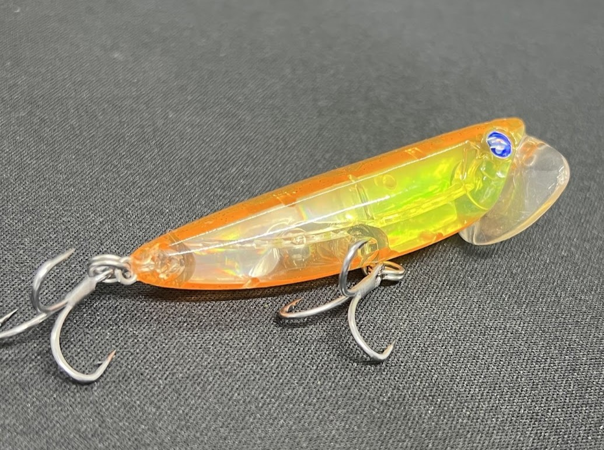

イネムン60(inemun 60)
イネムン60(inemun 60)はBlueBlue（ブルーブルー）のトップウォータープラグです。
ポッパーでもペンシルでもない、全く新しいカテゴリーのトップウォーター。「ただ巻くだけ」でカップが引き波・音・ラトルの3アピールを同時に発生させ、操作が苦手な人でも簡単にクロダイトップゲームを楽しめる。鹿児島県アドバンステスター・小原暁彦氏監修のもと開発された2025年注目作です。

スペック
- メーカー
- BlueBlue（ブルーブルー）
- 長さ
- 60 mm
- 重さ
- 6 g
- フック
- #10×2
- リング
- #2
- レンジ
- 水面（トップウォーター）
- タイプ
- トップウォータープラグ
- 沈下タイプ
- フローティング
- アクション
- 引き波＋カップ音＋ラトル音
- ターゲット
- クロダイ（チヌ）
- 価格
- 1,782円（税込）
- 発売日
- 2025年
▼今すぐチェック

イネムン60の特徴
巻くだけでいい。「カポッカポッ」の音に誘われてクロダイが浮いてくる
-
タダ巻きだけで3アピールを同時発生
巻くだけで①強烈な引き波、②カップが奏でる「カポッカポッ」というサウンド、③内部ラトルを同時発生。ロッド操作不要でここまでアピールできるトップは珍しい。
-
樹脂製カップの「シルエットレス」設計
カップを樹脂製にすることで、魚が下から見上げてもシルエットが曖昧になり違和感を与えにくい。至近距離でしつこく誘うクロダイのトップゲームでバイト率が上がる。
-
クロダイトップゲームの入門機
チュパゾー60やガチポップ60と違いロッド操作は不要。「操作が難しそう」と感じていた人の最初の一本として設計されているが、上級者のローテーションにも十分通用する。
イネムン60の使い方
基本はタダ巻きのみ。キャストして着水後、一定速度でリトリーブするだけでカップが水面を押し広げながら音を発生させる。リトリーブ速度はスロー〜ミディアムが基本で、速すぎると引き波が弱くなる。クロダイがチェイスしてきた際はリトリーブをわずかに遅らせて喰わせの間を作るのも有効。
イネムン60の得意な状況
クロダイがシャローエリアに差してくる春〜秋のデイゲームで特に威力を発揮する。護岸際・テトラ帯・カキ瀬などのストラクチャー周りはもちろん、オープンウォーターのシャローを広範囲に探るのも得意。「カポッカポッ」という音は波の音に消えにくい低音域なので、風がある日や波がある状況でも集魚効果が持続する。チニングトップ入門者が最初に試すのにも最適。
釣れるワンポイント
イネムン60は同じコースを複数回通すことで効果が増す傾向がある。1投目は無反応でも、2投・3投と同じラインを巻き続けるとクロダイが浮いてきてバイトすることが多い。また、チュパゾー60・ガチポップ60でアピールして引き出した魚に対して、イネムン60のスローなタダ巻きで仕上げるローテーションも効果的。
人気カラー
 #03 イナ
#03 イナ
ボラの幼魚をイメージしたナチュラル系。澄み潮・デイゲームの基本カラー。
 #39 レモンスパーク
#39 レモンスパーク
視認性の高いイエロー系。曇り・濁り・光量少ない場面でのアピールカラー。
 #40 モクズガニ
#40 モクズガニ
甲殻類をイメージした実績カラー。チュパゾー60と同色でローテーションしやすい。
 #60 サニーカンカンデリー
#60 サニーカンカンデリー
イネムン60オリジナルのオレンジ系カラー。晴天デイゲームでフラッシング効果を発揮。
画像出典:ブルーブルー公式HP